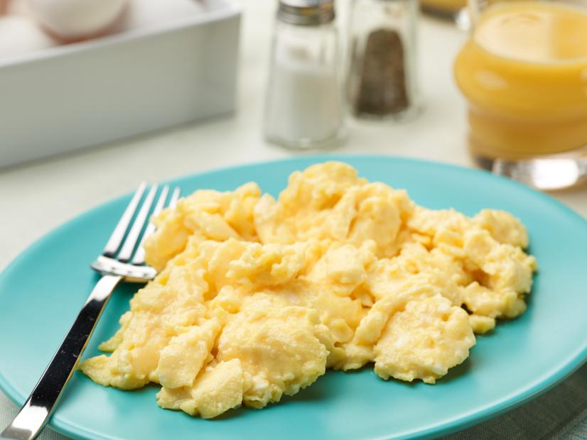

Scrambled Eggs

Fluffy eggs
One of the most simple yet flexible side dishes.
You can add other ingredients to the recipe but in this case I'll add what I usually put.
Ingredients
- 2 eggs
- A pinch of salt
- Cooking Oil
Steps
- Turn on the stove to medium heat
- Add some oil on the frying pan and wait for it to heat.
- Beat the eggs and onto the frying pan and mix the teaspoon of salt.
- Keep mixing until the liquid is gone but the eggs are not dry.